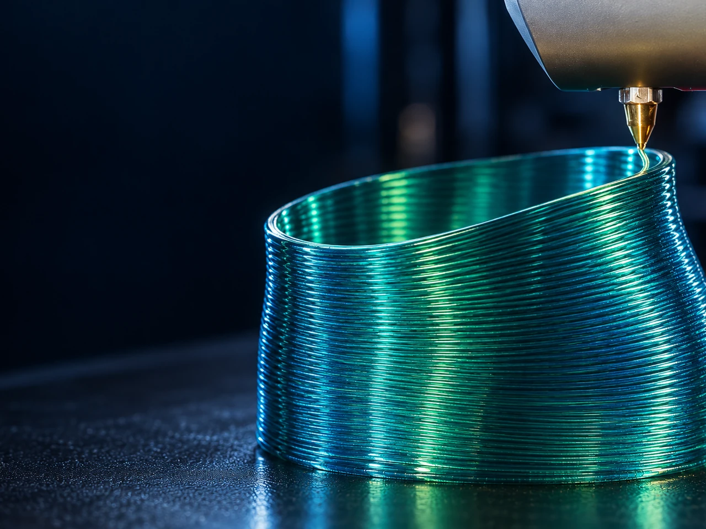

Orientation locale des couches
Modifier la direction du dépôt en fonction de la géométrie plutôt que d’utiliser une seule direction globale.
Explorer des stratégies de dépôt dans lesquelles l’orientation des couches devient une variable de fabrication.
MYCNC3D étudie expérimentalement des méthodes de dépôt non planaire et multiplanaire destinées à accroître la liberté géométrique et à réduire les contraintes imposées par un tranchage globalement planaire.

Présentation du projet
L’impression non planaire a été démontrée physiquement sur une plateforme FDM représentative.
MYCNC3D étudie des stratégies de dépôt dans lesquelles l’orientation des couches devient une variable de fabrication plutôt qu’une contrainte globale fixe. Les recherches portent sur l’orientation locale du dépôt, les trajectoires inclinées et courbes, les capacités de surplomb, la continuité des surfaces ainsi que les limites physiques de dégagement imposées par la buse et la géométrie de la tête.
Une trajectoire mathématiquement valide n’est pas nécessairement fabricable. Les trajectoires générées sont donc évaluées par des essais d’impression physiques afin d’identifier les limites pratiques liées à la pente, à la courbure, à la stabilité de l’extrusion et au dégagement machine.
Les travaux expérimentaux actuels visent à transformer les démonstrations réussies en stratégies de fabrication répétables et réutilisables.
Pourquoi cet axe est important
Une trajectoire non planaire mathématiquement valide peut rester impossible à fabriquer en raison d’interférences avec la tête, d’un dégagement insuffisant, d’une pente locale excessive ou de conditions d’extrusion inadaptées.
La recherche associe donc géométrie et fabricabilité.
Axes de travail actuels
Modifier la direction du dépôt en fonction de la géométrie plutôt que d’utiliser une seule direction globale.
Évaluer comment des trajectoires inclinées ou courbes modifient les besoins en support et la géométrie accessible.
Étudier des trajectoires continues suivant la surface plutôt qu’une approximation planaire en escalier.
Déterminer les limites pratiques imposées par la buse, le bloc de chauffe et la tête.
Identifier les trajectoires restant imprimables avec un dépôt stable.
Comparer les trajectoires générées avec les résultats réellement imprimés.
Approche d’ingénierie
Le cycle de recherche associe génération géométrique, inspection des trajectoires, préparation machine et essais d’impression contrôlés. Les résultats servent à affiner les règles de dégagement, les limites de pente et les stratégies de dépôt.
État actuel
L’impression non planaire a été démontrée physiquement. La phase actuelle vise à transformer les démonstrations réussies en règles de fabrication répétables et réutilisables.
Prochain jalon
Le prochain jalon consiste à établir des règles répétables de génération de trajectoires et de dégagement machine applicables à plusieurs géométries plutôt qu’à des pièces d’essai individuelles.
Le passage vers EN DÉVELOPPEMENT nécessitera des limites définies de pente, de courbure et de dégagement de l’outil, ainsi qu’une réduction des corrections manuelles et des résultats physiques répétables.
Plateforme intégrée
La fabrication non planaire se situe directement à l’intersection de la génération de trajectoires, de la cinématique machine et du dépôt matière. Elle constitue un lien expérimental essentiel entre les trois piliers MYCNC3D.
Collaboration
MYCNC3D souhaite échanger avec des chercheurs, développeurs logiciels, fabricants de machines et industriels explorant la fabrication additive non planaire ou multiplanaire.